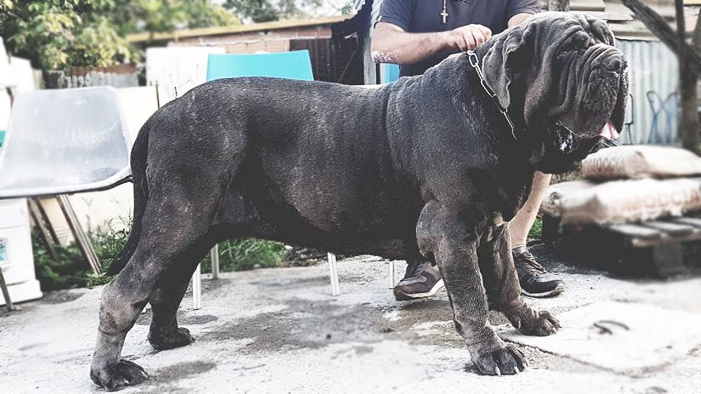
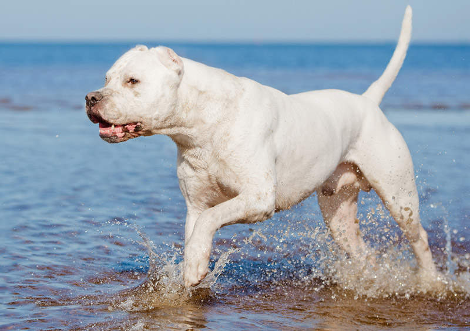
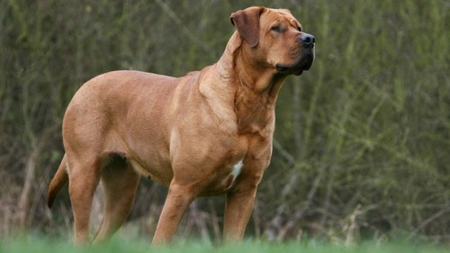
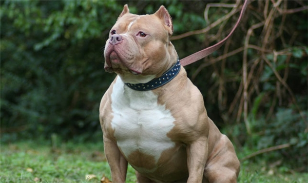

Bản tính hung dữ một phần nào đó vẫn tồn tại trong những loài chó đã được thuần dưỡng hiện nay. Trong danh sách dưới đây, chúng ta sẽ cùng điểm qua những loài chó hung dữ và nguy hiểm nhất trên thế giới .
Giống chó sục bò (Bull Terrier) xuất hiện ở Anh vào những năm 1830, bằng cách lai giữa giống Bulldog với giống chó sục Anh cổ (Old English Terrier), thêm vào một chút từ giống chó chỉ điểm Tây Ban Nha (Spanish Pointer), họ đã tạo ra giống Bull Terrier. Bộ dáng đáng yêu, dáng người thấp bé, rất dễ khiến cho mọi người tưởng nó là con chó ngoan ngoãn.
Tuy nhiên, tất cả chỉ là biểu hiện lừa dối, bạn có thể tưởng tượng, tên nhóc này có thể cắn chết chó beige Đức trong vòng 3 phút. Cơ thể nó cứng rắn như một vận động viên đấu vật. Lực cắn của nó mạnh như cá mập, hơn nữa có thể lặng yên tiếp cận kẻ thù không một tiếng động, thực sự rất mạnh mẽ.

Canario là loại chó có sức mạnh, khuôn mặt hình vuông, rộng và dài. Da cổ rất dày, thân hình vạm vỡ đầy cơ bắp, với bộ xương hàm to lớn. Chiều cao của Presa từ 55-65 cm và nặng từ 38-48 kg.
Canario tính tình rất hiếu chiến và nó không phải là loại có thể sống chung với loài chó khác. Loài chó này rất trung thành với chủ nhân, tuy nhiên người chủ phải nuôi dưỡng nó từ nhỏ. Người ta nuôi và thuần dưỡng loài chó này để bảo vệ hàng hóa, tuy nhiên sau đó chúng được sử dụng để mua vui cho con người trong những cuộc đấu đẫm máu, hay còn gọi là chó chọi.

Giống chó Ngao Pháp – French Mastiff còn có tên gọi là Dogue de Bordeaux hoặc Bordeaux Bulldog, đây là dòng chó có nguồn gốc từ Pháp, được lai tạo giữa các dòng chó Bulldog, Chó Ngao Tây Tạng và dòng chó Molossus La Mã. Loài chó này được người Pháp sử dụng trong các cuộc chiến tranh, bảo vệ gia súc, săn bắt và canh gác.
Giống chó Ngao Pháp có một ngoại hình mạnh mẽ và cơ bắp, phần cơ thể to khỏe và những cặp chân tương đối ngắn nhưng khung xương rất to cứng, chúng có kích thước chiều cao từ 58 – 75 cm và cân nặng từ 54 – 65 kg. Ngực rộng và sâu đến khuỷu chân trước. Đây là một loài chó có bản năng chiến đấu mạnh mẽ, đôi khi chúng rất độc lập, tự ý và cứng đầu, vì vậy cần phải nuôi và huấn luyện loài chó này từ khi còn nhỏ, cần có sự bình tĩnh, mạnh mẽ nhưng cũng kiên nhẫn để điều khiển được loài chó Ngao Pháp.

CChó ngao Brasil biệt hiệu là Fila là một giống chó ngao có nguồn gốc từ Brasil và khởi thủy từ dòng chó Ngao ở Anh, là giống cho to đô, hung dữ và chúng thường được dùng làm giống chó săn và chó giữ nhà. Chó ngao Brasil là loài chó dũng cảm và hung dữ phi thường, độ hung dữ thuộc vào hàng đầu trong số các loài chó nhưng lại tỏ ra hiền và dịu dàng với trẻ em trong gia đình nhưng đặc biệt dị ứng với người lạ. Chúng nó có khả năng theo dõi tuyệt vời nhưng lại khá hung hăng và bốc đồng. Vì kích thước, tính khí và độ nguy hiểm, giống chó này bị cấm ở nhiều nước trên thế giới

Chó ngao Tây Tạng được mệnh danh là “chúa tể thảo nguyên”, hay “sư tử núi tuyết”, do sống ở vùng núi Himalaya và Tây Tạng Trung Quốc. “To hơn chó sói, mạnh hơn báo hoa và nhanh hơn hươu nai” là những gì mà người ta nhắc đến khi nói về loài chó này. Nó có mái tóc dài và dày, chịu được lạnh, có thể ngủ trong băng tuyết. Tính cách mạnh mẽ, hung dữ, bản tính hoang dã vẫn còn khiến nhiều người khiếp sợ. Bảo vệ lãnh thổ, đồ ăn rất tốt, giỏi về tấn công, phản ứng dữ dội đối với người lạ nhưng lại cực kỳ thân mật với chủ nhân. Là một tên trông nhà và trợ thủ chăn dê thả ngựa đắc lực.
Trên cao nguyên Tây Tạng, có lẽ không loài vật nào là đối thủ của chó ngao, và chỉ con người mới có thể khắc chế, khiến chúng phục tùng. Có một “huyền thoại” về chó ngao Tây Tạng là chuyện con Sát Ba Tháp. Nó đã cắn chết tổng cộng 37 con sói để bảo vệ đàn gia súc, và được mệnh danh là “thần khuyển” với dân trong vùng.

Giống chó to khoẻ tai cụp của Ý, là hậu sinh của chó Molossus dữ dằn của La Mã cổ đại. Chúng có cái đầu thật lớn và thân hình to khoẻ. Cơ thể khổng lồ dị thường của chó Neapolitan Mastiff trung bình nặng tới 70 kg và cao 0,8 mét. Chó Neopolitan Mastiff có bề ngoài hung dữ. Đầu to và nhiều nếp nhăn lớn đến tận cổ. Đây là một trong những loài chó độc tài nhất thế giới, bởi vì một khi tấn công nó sẽ không dừng lại cho đến khi giết chết con mồi, kể cả người. Nó từng là loài chó được mafia yêu thích nhất để thể hiện sự khủng bố và quyền lực, có thể khiến bất kỳ ai cũng kinh hồn bạt vía.
Chó Neapolitan Mastiff từng tham gia chiến tranh trong các binh đoàn La Mã. Chúng được mặc áo giáp cắm chông sắc, rồi chạy thẳng tới chọc thủng bụng các con ngựa phía quân địch. Sau chiến tranh thế giới II, chúng gần như tuyệt chủng. Trước kia người ta chỉ thấy chúng tập trung đa số ở Ý nhưng bây giờ thì còn thấy xuất hiện ở nhiều nơi khác nữa. Hiện nay nó còn được huấn luyện để bảo vệ người và tài sản.

Loài chó này có thân hình to lớn, thể tạng khỏe mạnh nhưng tính tình lại đặc biệt hung dữ, nguy hiểm. Bản tính của Caucasian là mạnh mẽ, quyết đoán, cũng chính vì vậy, nếu không được huấn luyện, nuôi dưỡng đúng cách, chúng sẽ trở nên hung hăng, mất kiểm soát và sẵn sàng tấn công người lạ mặt bất cứ lúc nào, ở bất cứ đâu!
Nhưng điểm cộng đối với loài chó chăn cừu khổng lồ này chính là sự trung thành. Cả đời nó sẽ chỉ đi theo 1 người chủ duy nhất, sẵn sàng chiến đấu, hy sinh cả mạng sống để bảo vệ chủ nhân cho dù kẻ địch là loài nào đi chăng nữa!

Dogo Argentino là một con chó cơ bắp, có nguồn gốc ở Argentina, chủ yếu được sử dụng cho mục đích săn bắn, kể cả săn lợn lòi và báo. Mặc dù vô cùng mạnh mẽ và năng động, giống chó Dogo không tích cực thân thiện đối với con người. Theo Luật về những con chó ở Vương quốc Anh, Dogo Argentino bị cấm sở hữu

Tosa Inu là một giống chó nguy hiểm có nguồn gốc ở Nhật Bản, với cơ thể khổng lồ và nguồn sức mạnh bộc phát kinh người, Tosa Inu được dùng như một con chó chiến binh và bị hạn chế sở hữu về mặt pháp lý tại một số quốc gia.
Tosa Inu có chiều cao trung bình khoảng 60 cm, nặng từ 37 – 90kg, chúng là sự pha trộn giữa các giống chó Nhật bản xứ và chó phương Tây, như Mastiff hoặc chó Bun. Tosa Inu được sinh ra cho các trận đấu võ truyền thống Nhật, hay người ta còn gọi vui là “võ sumo kiểu chó”. Chúng thường tấn công một cách im lặng, không gầm gừ hoặc sủa mở đầu như các chú chó khác.

Pitbull là một giống chó nhà có nguồn gốc từ châu Mỹ, được nuôi ở Anh và nuôi để làm vật giữ nhà và cũng được sử dụng trong những cuộc chọi chó. Đây là giống chó dữ, hiếu chiến, bền bỉ, gan lỳ được mệnh danh là sát thủ máu lạnh hay còn được gọi là chó chiến binh hay võ sĩ giác đấu.
Là giống chó nhập ngoại có nguồn gốc từ Mỹ, đặc tính rất hung dữ và hiếu chiến. Dòng chó này có nguồn gốc từ châu Mỹ và đang dần được nuôi phổ biến ở Việt Nam. Được coi như hung thần của các loại chó chọi, với sức mạnh của cơ thể cộng với hàm răng sắc nhọn, khi đã xung trận Pitbull được ví như những chiến binh, chúng có thể cắn nhau đến hơi thở cuối cùng. Pitbull được xem là chúa tể của các loài chó chọi.
Pit bull không sợ đau khi chiến đấu, có tin đồn là da của nó không có dây thần kinh đau, điều này không đúng. Bởi vì lúc chiến đấu tốc độ tiết ra hóc môn kích thích của nó cao hơn so với các loài khác, khiến nó không sợ đau đớn và có thể kéo dài cuộc chiến. Khi nồng độ hóc môn kích thích hạ thấp, nó cũng biết đau.
Loài chó này còn có một cơ hàm khác biệt, có cấu tạo như khớp khóa, vì vậy khi nó đã cắn vật gì, hay đối thủ thì không dễ nhả ra. Vết thương do chó căn để lại sẽ rất sâu và rộng vì hàm răng của chúng rất dài, sắc nhọn, ở mức độ nhẹ có thể mang tật, nặng hơn có thể nguy hiểm đến tính mạng.
Khi Pitbull điên lên, ngay cả chủ nhân nó cũng cắn. Đã có rất nhiều trường hợp ở nước ngoài, chó tham gia chọi chó bất ngờ tấn công trẻ em hoặc cả người lớn. Tại Hoa Kỳ từ năm 2005-2012 bình quân mỗi năm có 19 người bị tử vong ở Mỹ do bị loại chó Pitbull tấn công.

 Bài viết gần đây
Bài viết gần đây
August 31, 2019
August 31, 2019
August 31, 2019
August 31, 2019
August 31, 2019